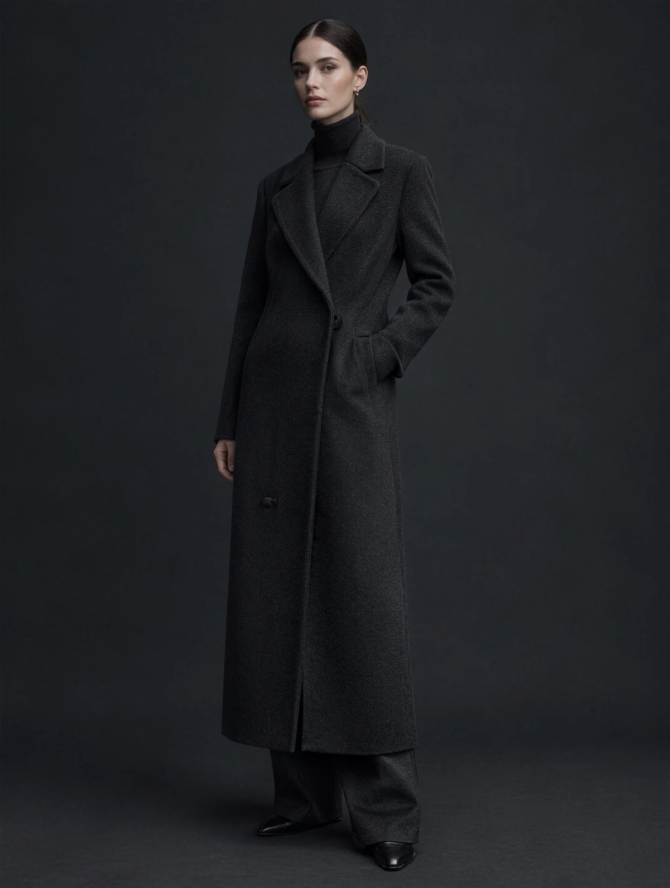
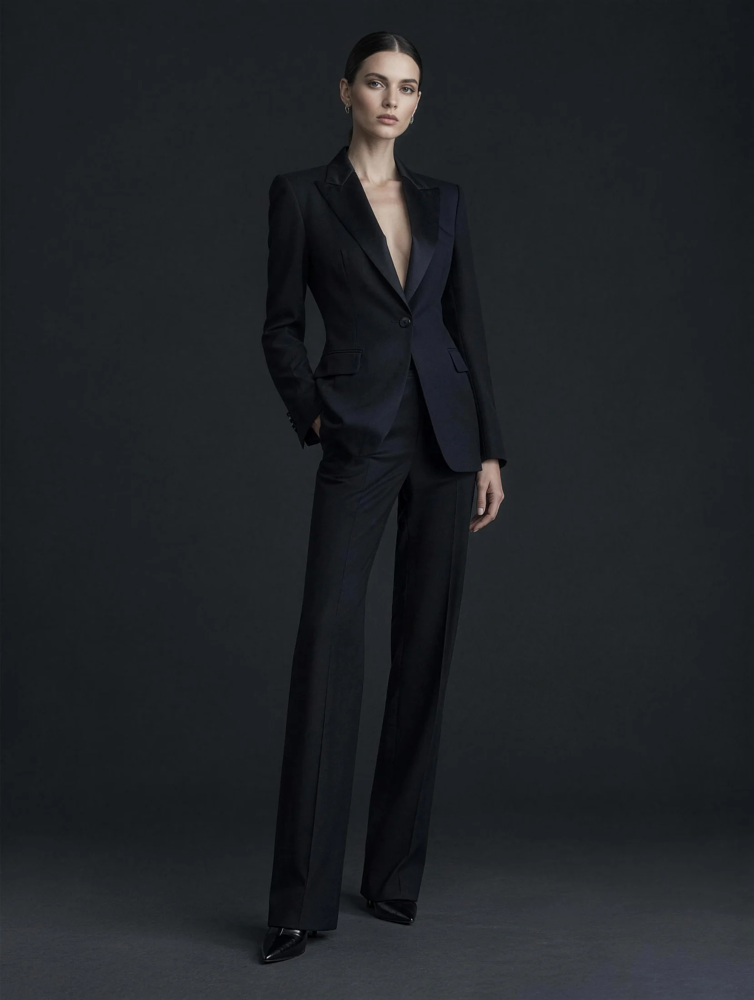
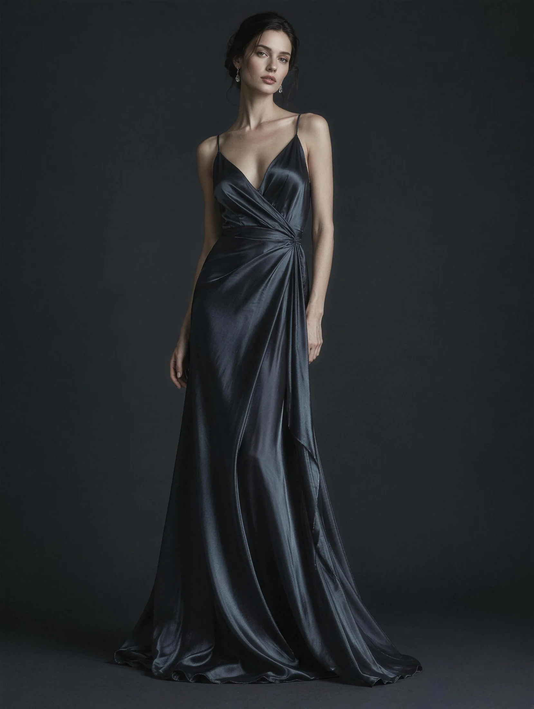
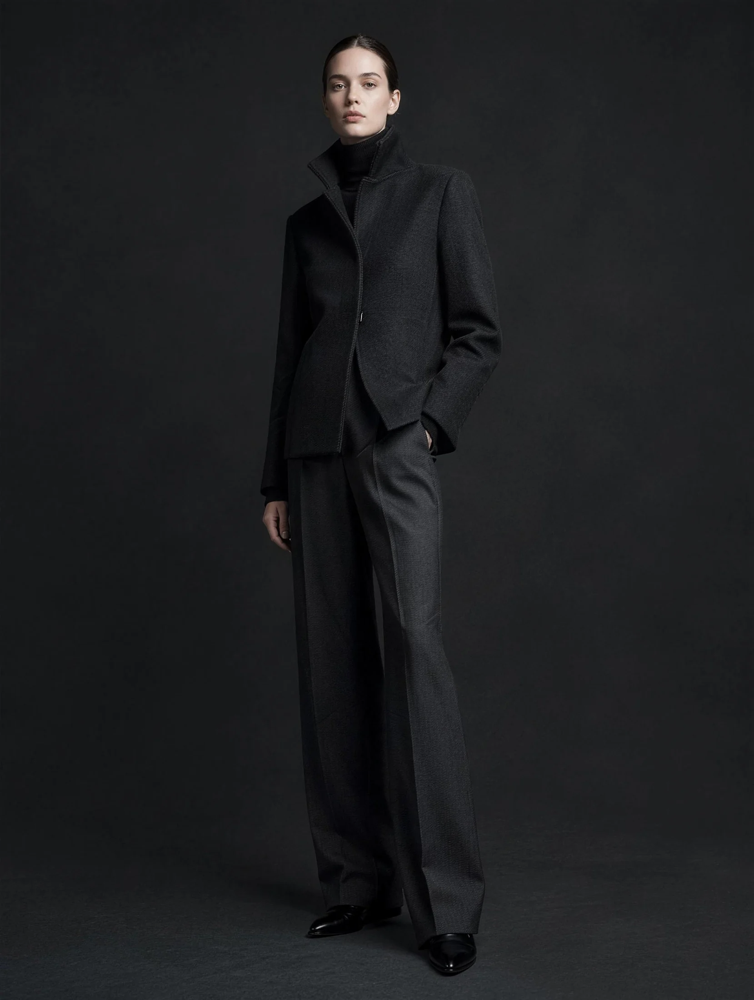

VESPÉR
Одежда для вечера
О доме
Один выпуск в сезон. Каждая вещь пронумерована и сшита надолго.
Коллекция · AW / 2026



Ткань
Ткань вблизи
Шерсть из Биеллы, плотный шёлк, кашемир. Каждую ткань выбираем сами, на ощупь.
Рука
Марк Вейн
Двадцать лет кроил для парижских домов моды, теперь у него своё ателье. Каждую вещь ведёт сам, от лекала до последнего стежка. Пальто должно пережить хозяина.
V
ателье VESPÉR · Париж
Лист ожидания
Мест немного
Сезон выходит одним выпуском. Записывайтесь в лист ожидания, детали пришлём письмом. Без корзины и спешки.